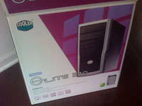
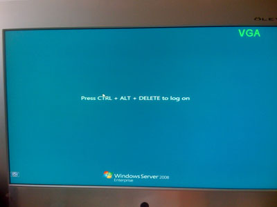

Apparently Psystar has decided to build & sell computers that are compatible with Apple's OS X operating system at an entry price of $399. Normally this would be nothing of note, however Apple strictly forbids installation of OS X on non-Apple hardware in their EULA. A short article about it from InformationWeek is here, and another article on MacRumors is here. As a relatively avid Apple fan, I do find it curious that Apple has managed to keep their OS X operating system from being installed on non-supported hardware (at least by the general public). Although I doubt Psystar will progress far enough to be a legit threat before some sort of legal action forces them to stop, it would be interesting to see what would happen if they were allowed to sell these 'Mac Clones'. A commenter in the InformationWeek article made a valid point that there is no way any of the bigger companies like Dell/HP/IBM/etc. haven't already made an attempt to challenge Apple by pursuing anti-trust lawsuits, and since this hasn't publicly happened, it is pretty safe to say they didn't get anywhere. However, if Apple were to be forced to allow OS X to be installed on non-Apple hardware, I wonder how much that would hurt Apple. In my opinion, Apple currently is the 'in' thing, as noted by Morgan Stanley a few weeks ago. This AppleInsider article states that 40% of incoming college freshmen are looking to purchase a Mac. Compare that to the current marketshare of Macs (15% courtesy of the AppleInsider article), and you can easily see that younger people think that owning Apple computers is currently the cool thing to do. Therefore, I don't necessarily see a sharp increase in market share, as most people who want a Mac have already found a way to purchase one. For instance, the Mac Mini can normally be found around $600, possibly cheaper, and that price point is comparable with Psystar's offering. And like I said before, I'm not sure it is the operating system that many of the college students who are converting to Apple computers are after: it is the fact that Apple computers are popular. Running OS X on an ugly PC is not the 'in' thing, having a MacBook is. Apple currently gets a lot of praise for having just one version of OS X for all users, instead of trying to create 'tiers' of operating systems like Microsoft that can handicap cheaper versions, and I feel like Apple only can do that because they can make money on the hardware. If their hardware no longer is the main profit source of their computer division (I still don't think they will be hurt very much even if Psystar wins), they may be forced to raise the price of the operating system, and become priced in the same way Microsoft is. I'm also quite sure Apple can detour 'rogue' hardware from being used by constantly updating the operating system with deterrents. Again, I highly doubt it will come to this, but it is something that is interesting to think about. And so concludes my first blog post that is a rambling of information that is not about me. And no, this is not one of the 5 queued blog posts. This was just a random thought provoked by an article.
New Type of Apple?
Posted April 14 2008 9:27PM by Michael
I finally officially have set my start date for entering the real world: May 27. It was really only a matter of time, as I don't believe I could find enough things to keep me busy all summer (the other option was after Labor day). For those of you unaware, I will be working at Technology Services Group (TSG), doing document-based consulting work. More specifically, I am a 'Web Application Developer'. I must say that I am kind of intrigued by it, and am excited to start. I am also excited to eat lunch with my dad, who currently works at Navteq, at the nearby train station, possibly at one of those tables that are at waist level where you stand up and eat around them. This means that I will have slightly over two weeks between graduation and beginning work, which is a little less than ideal, but hopefully after my vacation to Puerto Rico (May 18-24) with Joyce and friends, I will be ready to go. And hopefully not sunburned. Also, I have 5 more blog entries pre-written up, so be sure to check back daily. I'll probably release one every day this week to space them out (and keep you in suspense).
Official Start Date
Posted April 14 2008 6:01PM by Michael
Currently, the only thing set up is file sharing (currently not working), remote desktop (currently not working), and print server (possibly working but untested). The remote desktop is crucial, since I do not want to use the low quality keyboard and mouse more than I need too. I also must figure out how to set the server to a static port. To sum up this section, I need to summon Michael Pysson and his world of expertise. I didn't have too much trouble putting it all together. I was baffled by the fact that the hard drive bay called for me to put one hard drive in upside down, but after some tinkering I realized this was going to force me to twist an IDE cable upside down, so I broke protocol and put it in normal. Outside of that, this was a very easy install. During installation, I encountered a GRUB error 17, which my research told me had to do with it not being able to read my partitions. Since I stole an older 250GB IDE hard drive from a different computer, I decided to remove it from the server, put it in an external case, and reformat it, which seemed to work. It only took me two tries to install Windows Server 2008, and now I am up and running as the administrator. I eagerly anticipate CITES releasing this software for free before I graduate, otherwise this experiment might end after the 240 days of free trial is over. The total price of all of this comes to about $600 (obviously 2/3 of this total is the hard drives). Everything was purchased at Fry's in Downers Grove, IL over a span of 3 trips. I actually had the option of choosing a case fan that had LED's in the fan blades (or something of the sort), but had to pass for the sake of not wanting my room lit up at night. For those interested, here is a complete list of components:
The Server is Alive
Posted April 14 2008 1:18PM by Michael
 As many of you may know, my server project commenced this weekend. Though I was overly engrossed in the process (meaning I forgot to take step by step pictures), I do have some pictures of my component boxes.
As many of you may know, my server project commenced this weekend. Though I was overly engrossed in the process (meaning I forgot to take step by step pictures), I do have some pictures of my component boxes.
There genuinely is just too much information for me to regurgitate into this blog, but I will try my best (now that I have turned in my homework) to put down some of my thoughts: You will also notice a slight change in the fonts on the site, now that I am back online I remembered that I needed to play around with that a little to make it less boring.
Too Much to Say
Posted April 10 2008 7:40PM by Michael
As you can see, the site was down for an inexplicable amount of time recently. In fact, it was down for like 3 weeks. That is what happens when the internet bill is not paid, apparently. I have a few entries queued up for the next few days that I noted during my leave of absence, perhaps I will post one later. Until then, I will leave you with another chance to browse around the site since you have probably forgotten what it looks like.
Finally back up
Posted April 10 2008 1:54PM by Michael